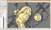
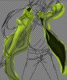

Bonjour à tous et à toutes, Pour commencer, sachez que les colorations sous gimp peuvent être réalisées d'une multitude de manières différentes. Ici, j'expliquerai une manière qui pourra vous inspirer pour créer votre propre méthode de travail. Vous avez ouvert "The Gimp" ?! Bien, commençons :-°
Bien, j'imagine que vous êtes prêt et motivé pour passer à la coloration, alors commençons sans plus tarder. Il faut savoir que toutes créations demande du temps et de la patience, aussi, n'abandonnez pas au premier problème rencontré. On commence avec un peu de vocabulaire :
Et les prérequis : - "The Gimp". La version utilisée pour ce tutoriel est Gimp 2.6.7 . - Un line art. - Une souris, un clavier et un écran branchés sur votre ordinateur ;) - Du temps. - De la patience. - Un dossier bien organisé pour enregistrer ses créations et travailler dans un espace optimisé.
Bien, cela est fait, vous pouvez maintenant chercher un line art créé préalablement ou sur un site tel que www.deviantart.com . Je vous suggère de bien le choisir car vous passerez beaucoup de temps dessus, pourquoi ne pas en chercher un représentant un personnage que vous aimez ;) . Voici celui que j'ai choisi : Mukuro Rokudo de la série "Katekyo Hitman Reborn ! " d' Amano Akira. Line art par HappybeeJrr. Je suis tombé dessus par hasard, le personnage avait une bonne tête alors après avoir contacté l'auteur pour lui demander l'autorisation de l'exposer dans un tutoriel, j'ai choisi celui-ci. Ah... oui... pendant que j'y suis, je pense que l'auteur de votre line art aimerait voir celui-ci colorié, alors n'hésitez pas à lui montrer votre coloration une fois finie ^^ .
Avant de passer à la seconde étape, j'aimerais préciser quelques petites choses : Les détails ajoutant du réalisme à l'image ne seront pas tous expliqués. En effet, le tutoriel est là pour vous apprendre une technique, je pense qu'il serait idiot de vous dire que sur chaque image vous devez faire ci ou cela, vous développerez votre propre manière de travailler ainsi elle diffèrera sans aucun doute de la mienne. Ensuite, il faut savoir que je suis loin d'être un professionnel et donc que le résultat obtenu ne sera pas d'une beauté divine ;)
Bien, pour commencer, il faut aller chercher votre line art à l'endroit où vous l'avez enregistré. Pour ce, il suffit de faire une fois "Gimp" lancé: "Fichier -> Ouvrir..." et de trouver votre image sur votre ordinateur. Passons à l'optimisation de l'espace de travail, je vous propose de configurer Gimp comme cela pour travailler :
Vous remarquerez que dans le cadre bleu j'ai placé la boite de Dialogue des Calques et celle des Outils sous forme d'onglets. Cela m'évite d'avoir une fenêtre flottante ou d'appuyer à chaque fois CTRL+L pour trouver la fenêtre des calques. Pour obtenir le même résultat, il vous suffit de cliquer sur le bouton entouré en jaune sur l'image précédente puis de faire : "Ajouter un onglet -> Calques". De ce fait, vous avez sans doute remarqué que l'on pouvait placer plusieurs choses sous forme d'onglets, si votre organisation est semblable à celle que je suggère, cela permet de travailler plus rapidement entre autre. Il vous faudra aussi connaître un minimum de raccourcis clavier si vous voulez être efficace, en voici quelques uns :
Sachez que pour connaitre un raccourci clavier, il suffit de laisser sa souris sur l'outil désiré dans la Boite à Outils.
Autre chose, les calques seront beaucoup utilisés pendant le tutoriel, aussi, je vais vous faire un petit descriptif rapide qui vous permettra de comprendre le principe si vous ne les avez jamais utilisés : Imaginez une feuille de papier sur laquelle vous avez dessiné un paysage, vous avez à votre disposition des calques et vous voulez ajouter un chat sur ce paysage sans pour autant modifier le dessin d'origine. Bien sûr, vous allez dessiner le chat sur un calque et le superposer au paysage. Imaginez maintenant que vous voulez ajouter un chien derrière le chat sans modifier aucun des deux dessins, vous allez glisser un calque entre le paysage et le chat. On peut donc ajouter autant de choses que l'on souhaite sans modifier une partie du dessin grâce à ces calques.
Bien, comment s'en servir maintenant ? C'est simple, voici la fenêtre des calques :
On ne s'occupera pas du "mode" dans ce tutoriel. L'opacité détermine à quel point le calque sélectionné (coloré) est visible, un peu comme un fantôme, à 100% on le voit complètement, à 0% on ne le voit pas. Les yeux en face des calques déterminent s'il est affiché ou non, un calque avec un œil sera visible, un calque sans ne le sera pas. Enfin, vous avez en bas de quoi créer, déplacer, dupliquer ou encore supprimer le calque sélectionné. J'imagine que vous avez déjà deviné que les rectangles en face des yeux sont des aperçus des calques en question.
Ok, ok, ça arrive... Mais il fallait bien passer par là sous peine de vous perdre au cours du tuto ^^ .
Bien, pour commencer, assurez-vous que vous n'avez bien que le calque du line art dans votre boite de Dialogue des Calques. Ensuite, coloriez le avec le pinceau (P) avant de passer à la suite.
Hein ?! Mais c'est dur ton truc, faut être hyper précis et en plus ça passe par dessus les traits noirs :( .
Pas de panique, c'est normal ! Je pense que vous avez fait le lien avec l'utilisation des calques, non ?! Mais de toute façon, à bien y réfléchir, si on pose un calque par dessus, cela nous donnera le même résultat.
Et comment on fait alors ? :euh:
C'est simple, on va d'abord séparer le noir du blanc, effectivement, le blanc va être remplacé par de la transparence. Ensuite, nous placerons le calque où les contours noirs seront préservés au-dessus de tout autre calque, de manière à ce que le noir soit au-dessus de nos traits de coloriage. Commençons par séparer le noir du blanc tout en enlevant cette seconde couleur. Pour ce, faites CTRL+A, ce raccourci sélectionnera toute l'image. Ensuite, allez dans "Couleurs -> Couleur vers alpha...", vous obtenez cela : Validez en vous assurant que ce soit bien la couleur blanche qui soit entre "Depuis:" et "vers alpha". Vous avez alors dans votre boite de calque un calque nommé "Arrière-plan" avec uniquement les contours de votre line art . Pour préparer l'étape suivante, créez un nouveau calque et glissez le en dessous d'Arrière-plan soit en le faisant glisser avec la souris, soit en utilisant les flèches vertes. Ironiquement, ce sera le calque nommé "Arrière-plan" qui sera toujours au premier plan :lol:
Bien, les préparations sont terminées, vous allez bientôt pouvoir faire appel à vos réels talents d'artiste :) !
Au cours de notre création, nous allons avoir un calque pour tout et n'importe quoi, que ce soit un bracelet, les cheveux ou encore une petite miette de pain sur le côté de la bouche ^^ . Pour commencer on peut déjà choisir quelles seront les couleurs du personnage et indirectement le nombre minimal de calques. N'hésitez pas à faire ça comme bon vous semble (ce que j'appelle aussi "À la barbare") , la gomme est là pour effacer le superflu ;) . Par exemple, je choisis la couleur de la peau sur un calque placé en dessous des contours... ah oui, n'oubliez pas de prendre une grosse brosse et de l'agrandir : En passant, nommez votre calque "Peau" (par exemple) en faisant un clique droit sur le calque en question puis "Modifier les attributs du claque".
Mais c'est pas esthétique du tout ton truc, ça dépasse de partout ! :o
Comme je le disais, la gomme est là pour effacer le superflu, personnellement je ne gomme que vers la fin, ça me laisse la liberté de dépasser et donc de gagner du temps, car on n'y passera pas qu'une seule fois sur ce calque... Bien, ensuite, créez un nouveau calque pour un vêtement par exemple, coloriez et nommez-le. Faites pareil pour chaque éléments distincts, voilà à quoi j'en arrive de mon côté :
On compte 13 calques alors que je n'ai pas fait les yeux ni les détails. Si on cherche une image de ce personnage sur google on tombe sur cela : Ce qui est totalement différent de ma coloration. En effet, une coloration peut être perçue comme on le souhaite et puis on pourra aisément changer d'avis en cours de route ^^ .
Une fois cette étape passée, il faudra attaquer un à un les différents calques afin de donner une meilleure allure à notre colo. On peut aussi attaquer cette nouvelle étape sans avoir choisi toutes les couleurs, tout est une question de méthode :-° .
Nous allons maintenant nous occuper des premiers ombrages. Je tiens à signaler que la façon d'ombrer quelque chose varie suivant la personne ; là aussi, il s'agira d'apprendre une technique parmi d'autres. Vous n'êtes pas sans savoir que les zones d'ombres d'un objet sont plus sombres et les zones de lumières plus claires. Donc il suffit de choisir une lumière "imaginaire" sur votre dessin et d'appliquer ces différentes zones suivant son emplacement. Tout est question de visualisation :
Ici la lumière se situe contre une plaque en arrière plan.
Pour commencer, nous allons nous débarrasser de tous les calques sauf de celui qui nous intéresse pour ne pas qu'ils nous gênent (il suffit de cocher/décocher les cases avec les yeux dans la boite des calques). Nous allons aussi effectuer un zoom sur la zone à colorier (CTRL ++) ; voilà qui est plus pratique, vous devez avoir quelque chose ressemblant à ceci :
Commençons par les zones d'ombres, pour créer une ombre simple et un minimum de "réalisme", il vous faudra la même couleur que votre peau en plus sombre, logique :p . Voici la couleur que j'ai sélectionné pour l'ombre :
Vous remarquerez qu'il y a un point rouge dans le cadre des couleurs, représentant approximativement l'endroit de la couleur de peau d'origine. Bien, nous en arrivons à la partie délicate: il vous faudra maintenant tracer au pinceau (P) et avec une brosse floue (Circle Fuzzy) les zones d'ombres suivant votre source de lumière. Personnellement je fais ça "à l'instinct" (sans origine de lumière bien définie) , ce qui n'est pas forcement un bon point, voilà ce que ça me donne :
Bien sûr, n'hésitez pas à changer la taille ou la forme de votre brosse si nécessaire... Comme vous vous en doutez, les ombres ne sont pas toutes aussi "profonde" les unes que les autres. Il vous faudra alors ajouter autant de couleurs que nécessaire pour représenter correctement un certain dégradé vers la couleur primaire. Pour ce tutoriel, j'ai choisi deux couleurs sombres et voilà ce que ça donne :
Il faut maintenant penser aux reflets de lumières. Grossièrement, ils se placent sur "les bouts qui dépassent" ou bien les endroits les plus près de nous sur une surface arrondis, nous parlons donc encore de visualisation. Le principe est le même que pour les ombres, il faut choisir une couleur plus claire que la peau d'origine. Voilà ce que ça me donne:
Bien, vous devez maintenant être apte à reproduire des effets d'ombres et de lumières basiques sur tout autres éléments que la peau, nous n'y reviendront donc pas par la suite de manière à vous garder éveillé :-° .
Maintenant que vos ombrages de peau sont finies, je vous suggère de passer à la coloration des cheveux. Je vais ici vous proposer une façon de les représenter qui colle bien au style "simple" de mon line art. Voici un aperçu du résultat final :
Vous allez maintenant donner ce petit effet aux cheveux (ou a la fourrure) de votre line art : - Premièrement, choisissez votre palette de couleurs (ce que vous pouvez voir sur l'image précédente sous forme de ronds pleins) en prenant des couleurs plus sombres que votre couleur d'origine et optionnellement une couleur plus claire très proche du blanc pour donner un effet brillant. - Ombrez, selon le même principe que celui de la peau, en fonction de la lumière visualisée. - Enfin, servez vous de l'outil de barbouillage (S) avec une brosse relativement petite pour faire des mouvements de va-et-vient comme suit :
Entraînez vous à réaliser cet effet car, encore une fois, il y a plein de façons de l'appliquer ;) . Selon votre image, vous pouvez changer le taux du barbouillage pour optimiser l'effet. Voici un comparatif des taux à 50% (par défaut) et à 75% :
Vous remarquerez qu'un taux élevé correspond mieux à des cheveux longs et inversement.
A présent, vos cheveux devraient être ombrés correctement... Cependant, il manque encore un petit effet de lumière. Prenez votre pinceau (P), pipettez (O) votre couleur claire choisie et appliquez sur un nouveau calque quelques "bandeaux" de lumière sur les cheveux, un exemple vaut mieux qu'une longue description alors voici : N'hésitez pas à en mettre un peu partout, la gomme est là pour gommer le superflu ;) . Pour la suite, il vous suffira d'appliquer la même méthode de va-et-vient que précédemment, cependant, je vous recommande de le faire de façon plus diagonale, comme les dents d'une scie :
C'est ainsi que j'ai pu obtenir ce résultat :
Après avoir soigneusement gommé le superflu des cheveux à l'aide de brosses de différentes tailles, les cheveux de notre line art ressemblent à ceux-ci :
Vous maîtrisez maintenant une technique simple de représentation de la pilosité qui ne demande qu'à s'améliorer avec le temps (plus de couleurs, meilleurs effets d'ombrages etc.). Tenez vous bien car la prochaine partie sera du même cru, nous allons attaquer les ombrages avancés :) !
Ombrer c'est bien, mais comme on l'a vu pour les cheveux, il faut savoir ombrer de différentes manières. Le but de cette partie du tutoriel sera de vous montrer que plusieurs rendus sont possibles par une même technique de base ;) . Nous allons donc suivre cette partie en coloriant un vêtement du personnage afin d'illustrer les descriptifs. Commençons par ombrer votre élément (pour moi, la veste) tel que vous savez si bien le faire à présent : Une fois que cela est fait, nous allons choisir une brosse avec une forme particulière afin de pouvoir donner un certain effet à notre ombrage. En ce qui me concerne, j'ai choisi la brosse "Diagonal Star" dont j'ai un peu modifié les proportions. Cette brosse me permettra de donner un certain effet brossé à la veste grâce à l'outil de barbouillage et des mouvements de va-et-vient un peu aléatoires :
N'hésitez pas à repasser sur vos premiers barbouillages afin d'obtenir un meilleur effet.
En changeant la taille de la brosse, l'effet varie quelque peu, à vous d'ajuster vos outils pour améliorer votre travail. ;)
C'est donc par cette méthode que j'en suis arrivé à une première image que j'ai améliorée à l'aide d'un nouveau calque pour les revers de veste en cette seconde image :
A partir de cette démonstration, vous devez maintenant être apte à améliorer vos ombrages par divers barbouillages. On notera aussi que l'"Outil de flou et de netteté" (Maj + U) est là pour vous assister lors de vos barbouillages : il vous suffira de passer plusieurs fois la brosse après avoir choisi dans "Option des Outils" le type de convolution à l'endroit où vous voulez soit améliorer la netteté, soit rendre plus flou. Vous vous demandez maintenant ce que peut bien vouloir dire "convolution" ?! Eh bien... je n'en sais strictement rien ^^ . Tout ce que vous avez besoin de savoir, c'est que le premier type "flou" permet de rendre plus flou et que le second, "Augmenter la netteté" permet de rendre plus nette, je ne pense pas que ce soit dur à retenir ;) . Aller, comme je suis sympa, je vais tout de même vous donner la définition du mot "convoluté" :
Ce qui, vous le voyez, ne nous avance à rien :lol: . Retournons à nos moutons avant que je ne perde toute once de crédibilité. Assurez-vous de bien travailler votre coloration, car nous passerons directement à la correction des erreurs dans la prochaine partie.
Parce que l'être humain n'est pas parfait, il lui arrive très fréquemment de faire des erreurs et le graphisme n'y échappe pas ;) . Il faut savoir que la plupart de ces erreurs ne se voient pas d'un premier coup d'œil et nécessitent quelques manipulations afin de les mettre en évidence. Sur mon personnage, j'ai relevé un total de 22 fautes (j'en relèverai encore bien plus par la suite) qui ont besoin d'être réparées. Afin de les mettre en avant, il vous faudra créer un nouveau calque que vous remplirez (Maj + B) avec une couleur "fluo" comme celles qui suivent :
Une grande partie de mon personnage étant verte et les motifs étant jaunes, il est évident que mon calque "fluo" ne sera ni vert ni jaune (retenez bien la leçons ;) !). Vous passerez ensuite celui-ci entre vos différents calques afin de repérer vos erreurs, elles devraient ressortir tout naturellement :
Maintenant, corrigeons :-° .
Premier type d'erreurs : les dépassements. - Lorsque la couleur dépasse les traits de contours : - Lorsque le pinceau laisse des traces "invisibles" : Pour corriger cela, vous savez faire, il suffit de gommer les contours.
Second type d'erreurs : les oublis. - Lorsque l'on oubli de colorier une zone : Vous en connaissez déjà le remède, bien que cela puisse parfois être peu pratique, il faut faire la colo de cette zone.
Troisième type d'erreurs : la transparence involontaire. - Lorsque, lors du barbouillage, vous avez dépassé sur une zone transparente : Pour cela, plusieurs solutions sont possibles : - Vous refaites la colo. - Vous glissez un calque contenant une "tâche" de la forme et la couleur (général) de la zone concernée en dessous de ce dernier, ce que je vais faire concernant ma colo.
Une fois vos erreurs corrigées, le calque "fluo" ne vous sera plus d'aucune utilitée, vous pouvez maintenant le supprimer. Je pense que vous pouvez dès à présent considérer votre colo comme finie, félicitations ;) . Une dernière partie suivra pour ceux qui désirent aller plus loin.
Tout ce que nous avons fait jusqu'à présent est de colorier notre personnage à l'aide des outils présents dans la boite à outils. Cependant, il faut savoir que gimp regorge d'une multitude de scripts, fonctions ou encore outils tous autant utiles les uns que les autres, ce qui peut vous permettre d'améliorer vos créations. Du moins, il n'est pas nécessaire de tout connaître : malgré le temps passé sur ce logiciel, je ne me suis pas encore servi de plus de la moitié des fonctionnalitées de gimp ;) . J'aimerais, pour en finir avec ce tutoriel sur les "trucs basiques" du coloriage, vous faire part de deux fonctions se trouvant dans le menu "Couleurs". En effet, je vous ai dit précédemment que la couleur de la peau ne me convenait pas et que j'allais y remédier...
Oui, suffit de la refaire, c'est pour cela qu'il faut bien choisir ses couleurs :euh: !
Eh bien détrompez-vous! Si jamais une des couleurs ne vous satisfait pas sur votre création, vous pouvez toujours la changer grâce aux calques : 1 - On veut une peau moins blanche. 2 - On va dans "Couleurs"->"Luminosité-Contraste..." : 3 - On change les valeurs de saturation et de luminosité jusqu'à satisfaction sur le dessin :
Et voilà, vous avez potentiellement réparé une erreur très facilement :-° . Voici un petit comparatif, selon le point de vue cela peut être pire ou mieux, mais il fallait bien illustrer mon exemple :
Pour apprendre à vous servir convenablement de cet outil, essayez de bouger les curseurs de droite à gauche afin d'observer les changements, pas d'inquiétude, vous pourrez toujours faire CTRL+Z afin d'annuler les erreurs...
Hmm... C'est bien pratique, mais comme l'indiquent les définitions, cela ne permet aucunement de changer la couleur :( .
D'où l'utilité d'un second outil dans le même menu : "Couleurs"->"Colorier" : Une seconde fenêtre apparait, on note que la boite de dialogue contient "luminosité" et "contraste", qui fonctionnent de la même manière que vu précédemment. Ce qui nous intéressera, ce sera le premier curseur "Teinte". Ce dernier permettra de donner une nouvelle teinte à l'élément sélectionné via le calque, les deux autres curseurs "ajusteront le tire" afin d'obtenir une couleur satisfaisante. Pour illustrer l'outil, je vais essayer de reprendre les vrais couleurs du personnage de Rokudo Mukudo : Commençons par les cheveux, il faut savoir que l'outil est très malléable, il faudra ajuster longtemps les curseurs afin d'être satisfait :
Comme pour "Luminosité-Clarté..." Vous comprendrez l'outil à force de bouger les curseurs de droite à gauche, sachant que toute modification involontaire pourra être annulée par CTRL + Z. Bien, à vous de jouer, quant à moi, j'ai essayé d'approcher mon personnage de l'original grâce à ces deux outils et voici ce que j'obtiens, avec un comparatif de l'ancienne image à côté :
Bien sûr, le résultat aurait pu être plus convaincant, notamment pour le tee-shirt, si j'avais souhaité appliquer ces couleurs dès le début. Finalisons notre création! Enregistrez une copie sous forme de "nom.xcfgz" ou "nom.xcf" que vous garderez pour modifier la création plus tard (car comme expliqué au début, ces formats conservent les calques et la transparence). Enregistrez maintenant votre image sous forme "plate" dans un format "populaire" comme le ".png", le ".gif", le ".jpeg" etc. Toutefois, je vous conseille d'enregistrer en .png tout en laissant les options par défauts (lors de l'ouverture de "Enregistrer en PNG") avec Gimp. Mon image d'origine est de format 1693x2367, ce qui est très grand. En reduisant la taille de l'image : "Image"->"Échelle et taille de l'image...", je vais avoir une perte de qualité qui rendront invisibles les petites erreurs non corrigées ;) .
Félicitations, vous avez achevé ce tutoriel. Il faut savoir que si ce tutoriel a servi à colorier une image de style manga, il pourra vous être utile pour réaliser d'autres choses (par exemple, faire le skin d'un modèle 3D, pour les connaisseurs). Pensez à noter l'auteur du line art à l'endroit où vous exposerez votre création. Souvenez vous que plus on pratique le graphisme, plus on s'améliore et ne vous laissez pas décourager, tout s'apprend ;) .
Mukuro Rokudo de la série "Katekyo Hitman Reborn ! " d' Amano Akira. Line art par HappybeeJrr, Coloration par Valt.

{kind=link}
{kind=link}
{kind=link}
{kind=link}
{kind=link}
{kind=link}
{kind=link}
{kind=link}
{kind=link}
{kind=link}
{kind=link}
{kind=link}
{kind=link}
{kind=link}
{kind=link}
{kind=link}
{kind=link}
{kind=link}
{kind=link}
{kind=link}
{kind=link}
{kind=link}
{kind=link}
{kind=link}
{kind=link}
{kind=link}
{kind=link}
{kind=link}
{kind=link}
{kind=link}
{kind=link}
{kind=link}
{kind=link}
{kind=link}
{kind=link}
{kind=link}
{kind=link}
{kind=link}
{kind=link}